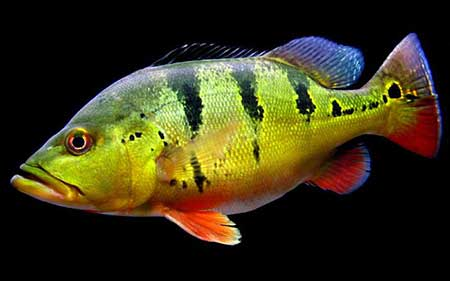
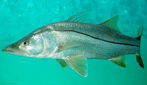

O que é a pesca ecológica?
A pesca ecológica, ou pesca consciente, vai além do simples ato de pescar. É uma filosofia que busca o equilíbrio entre o prazer do esporte e a máxima preservação do meio ambiente. Envolve técnicas de baixo impacto, respeito aos ciclos de reprodução dos peixes e o compromisso de deixar o local de pesca mais limpo do que o encontramos. Neste espaço, vamos explorar juntos esse universo.
Saiba mais

